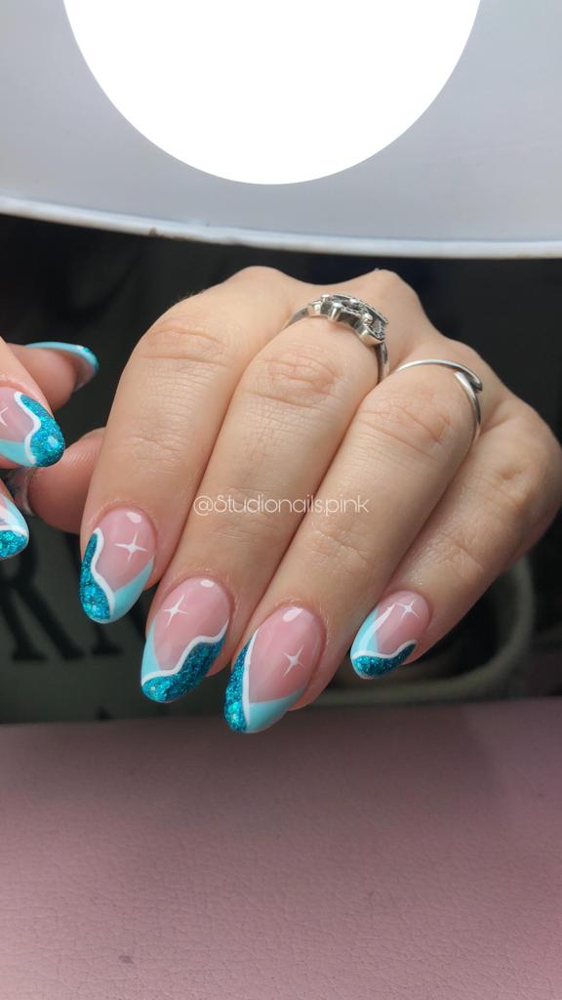

Cursos

CURSO DE ESMALTADO SEMIPERMANENTE +
MANICURIA RUSA + KAPPING
Esta capacitación se enfoca en la limpieza profunda de la zona de cutículas, incluyendo esmaltado semipermanente y kapping con base niveladora
TALLER PRESENCIAL
🗓 FECHAS DISPONIBLES:
Viernes 5/8 - 1 cupo disponible
Horario: de 9:00 am a 14:00hs aprox (es una sola clase)
TEMARIO:
*anatomía de la uña natural
*manicuria rusa con torno
*tipos de fresas
*recomendación de torno
*correcto uso de torno (velocidad y funciones)
*preparación mecánica de la uña natural (limado)
*correcto corte de cutícula con alicate
*tipos de preparadores
*preparación química para cada tipo de uñas
*técnica de bolsillo
*pulido con fresas
*técnica de esmaltado perfecto
*retirado de semipermanente
*kapping con base niveladora
*Blick perfecto
*Tecnica de limado
*Service
*Service con desprendimientos
*Retirado del material
*Limpieza de pincel
*decoracion/nail art (french)
*Referencias de insumos y marcas
*tipos de uñas
*enfermedades/embarazadas
*mucha información teórica
💵 VALOR: $ (cupos súper limitados)
- Se seña el lugar abonando el 50%
- Los $ restantes se abona ni bien ingresan a clase
- En caso de no asistir al curso por cualquiera sea el motivo avisar con anticipación y se re programa la fecha
-La seña no se devuelve, ni se las incluye en las clases posteriores (sin excepción)
FORMAS DE PAGO:
-Mercado pago
-Efectivo
-Tarjetas con un 10% de recargo
-Transferencia (pedir cbu o alias)
🎓SE ENTREGA DIPLOMA DE APROBACIÓN UNA VEZ TERMINADO EL CURSO
SE ENTREGA FOTOCOPIAS DE LO VISTO EN CLASE (con un valor de $)
-INCLUYE TODOS LOS MATERIALES
-🎁Incluye regalo sorpresa
- El curso incluye cabina y torno para usar durante el curso
- Se realizará un lunch break ☕️🥐
IMPORTANTE
Esta es una lista de materiales para que se compren post al curso.
LISTA DE MATERIALES:
•repujador
•alicate para cutículas
•primer, bond
•wipes
•alcohol
•lima 100/180
•lima 240/320
•sponge 100/180
•cepillo para retirar polvo
•base coat
•top coat
•esmalte semi (blanco, vía láctea, glitter plateado tornasolado y 1 color (cualquier color)
•pincel liner finito
•fresas: flame bit, fresa ball bit, fresa pulidora, •fresa de cerámica para retirado
•base niveladora
•algodón
•papel aluminio
•removedor
📍DIRECCIÓN
El curso se va a realizar en mi domicilio en barrio lambertucci Escobar, los claveles 2943, entre bomberos voluntarios y San Francisco
IMPORTANTE:
-Asistir al curso sin cremas para manos, sin aceites y sin esmalte tradicional (retirar un día antes con quita esmalte)
-Traer al menos 5 uñas al natural (es decir libre de esmaltado kapping o esculpidas y sin cremas)
- Traer lapicera y cuaderno para apuntar
💅🏻 Si estas interesada sobre el costo de insumos consultame y te envío lista de precios.
(Las fresas para manicuria rusa las conseguen en mi studio)